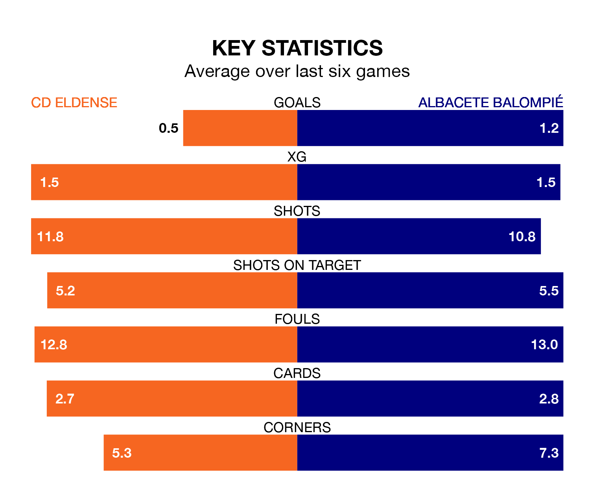

Struggling Albacete Balompié face CD Eldense away at the Estadio Municipal Nuevo Pepico Amat on Sunday looking to build on a win in their last league outing.
After securing all three points with a 1-0 victory over CD Tenerife on April 14, Albacete sit 20th in the Segunda División.
They travel to play an Eldense side 15th in the standings, who lost in their last match, 1-0 against Real Valladolid, on April 13.
Eldense are in terrible form in the Segunda División, with no wins and a draw from their last six games.
With a win and two draws over that period, Albacete's form is better – they have taken five points from 18, compared to the hosts' one.
With 41 goals in 35 games so far this season, Eldense are scoring more than average in the league with 1.2 goals per game. But they are conceding more than average too, letting in 50 goals at a rate of 1.4 per game.
The away side, meanwhile, are average scorers, with 1.1 goals per game. They have conceded 1.4 goals per game.
Eldense's Marc Mateu Sanjuán is among the league's most creative players, racking up seven assists in 33 appearances so far this season, and holding third spot in the Segunda División's assist charts.
For Albacete, Manuel Fuster Lázaro has set up the most goals, having laid on seven assists in 35 games.
In the last three years, Eldense and Albacete have played each other on three occasions. Eldense won one of them and they drew the other.
Their last meeting was on December 19, when they played out a 1-1 draw.
Updated: 15:40 (UTC), 18/04/24